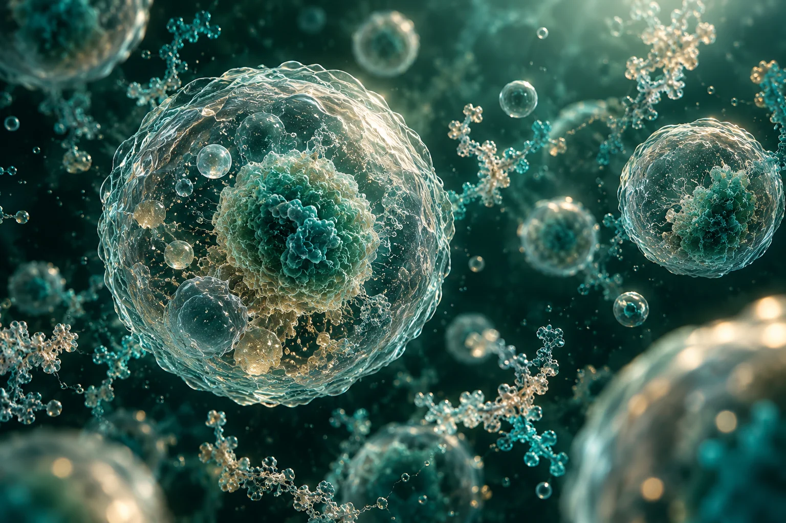

Los fundamentos que conectan los organismos vivos, los medicamentos biotecnológicos y la medicina personalizada.
Ilustración conceptual · Biotecnología médica
01 · FUNDAMENTOS
Biotecnología y medicina personalizada.
Los avances logrados en biotecnología, entendida como la aplicación de organismos vivos y procesos biológicos para el desarrollo de soluciones médicas, abren la puerta a la medicina predictiva y personalizada, a través de la utilización de medicamentos biotecnológicos innovadores (como los anticuerpos monoclonales o las proteínas recombinantes1) que permiten tratar con terapias específicas fallos genéticos diagnosticados como ocurre con muchos de los nuevos medicamentos contra el cáncer.

LA BIOLOGÍA COMO PUNTO DE PARTIDAIlustración conceptual
02 · CONCEPTOS CLAVE
Las ideas esenciales.
Abre cada concepto para conocer su relación con la investigación.
Biotecnología +
Aplicación de organismos vivos y procesos biológicos para el desarrollo de soluciones médicas.
Medicamentos biotecnológicos +
Los medicamentos biotecnológicos incluyen anticuerpos monoclonales, proteínas recombinantes, insulina humana y eritropoyetinas.1
Medicina predictiva y personalizada +
La medicina personalizada relaciona las características de cada paciente con terapias específicas, como ocurre con algunos tratamientos contra el cáncer.
AVAC +
Años de vida ganados ajustados por calidad. La primera nota, de 2008, señala que los logros de los biofármacos en estos términos son generalmente modestos.1
03 · DESAFÍOS
La calidad de la información también importa.
Pero se plantean algunas cuestiones relevantes, como analizar bien los sesgos en los datos y la calidad de los modelos, llevar a cabo un estudio previo de la viabilidad de acceso a información cuando está almacenada en diversas fuentes que alimentan a los modelos, realizar una correcta interpretación de los falsos negativos o positivos y determinar la responsabilidad de la decisión2.
En el caso de Casgevy, las células madre sanguíneas del propio paciente se modifican mediante CRISPR/Cas9 y se reinfunden después de un acondicionamiento con quimioterapia. Es un mecanismo específico de terapia génica; no debe atribuirse a todos los medicamentos biotecnológicos. (FDA, 2023)
Una dimensión complementaria
La inteligencia artificial en salud se aborda aquí por su relación con el análisis de datos y la toma de decisiones. La OMS propone seis principios: autonomía; bienestar y seguridad; transparencia; responsabilidad; inclusión y equidad; y respuesta sostenible. (OMS, 2021)
Antecedentes en economía de la salud
La valoración de los AVAC citada en la nota de 2008 corresponde a ese contexto. No permite afirmar que todos los biofármacos actuales tengan beneficios modestos; cada intervención requiere evidencia específica.